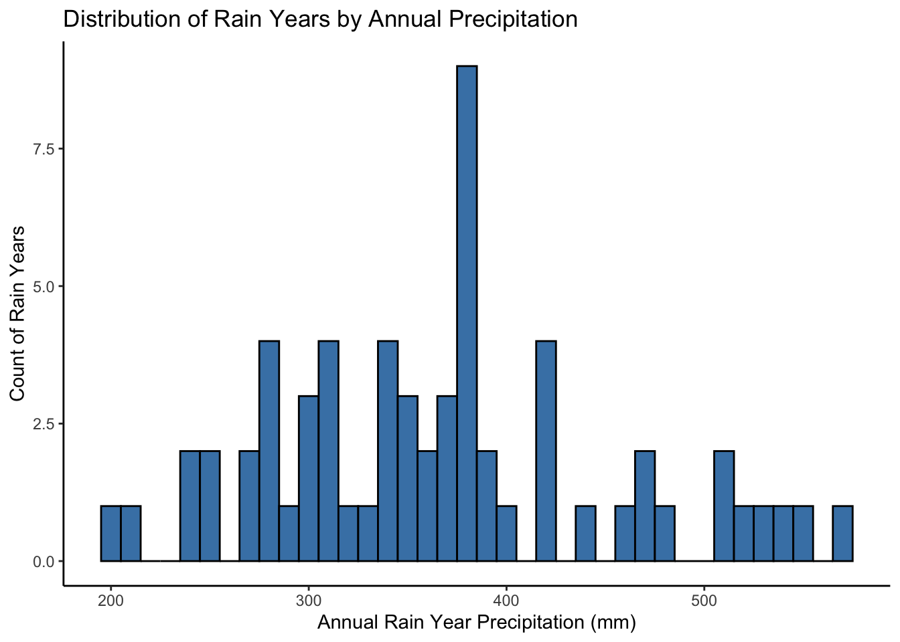
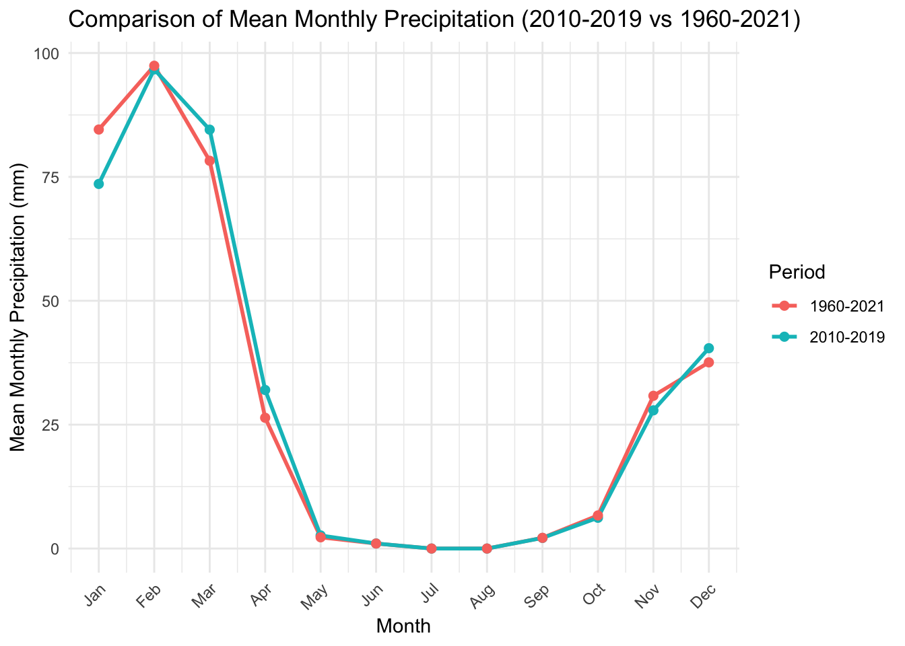
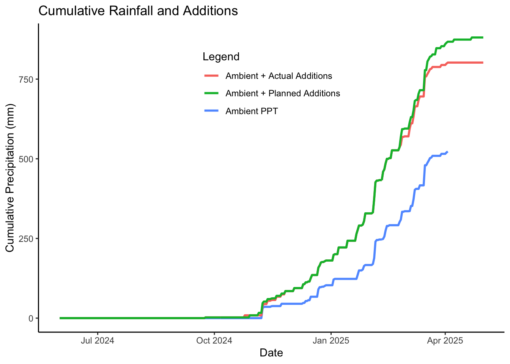

This code explores historical precipitation data for Ongava Research Center and uses this to come up with a watering schedule for the decomposition experiment establish by Heather Throop and Rolf Becker in June 2024.
Rainfall data from the experiment are compared with historical data.
Data are read in from Dropbox, with the exception of WorldClim geotiffs that are pulled from a folder on Heather’s local drive (due to issues with getting an API pull to work with Dropbox - see notes below).
Output csv data are saved in Dropbox.
Output figures are saved in the Github repo (along with this script).
TODO:
- Check if partial rainyears should be removed from WorldClim data.
Set Up
# Load necessary packageslibrary(terra)
Warning: package 'terra' was built under R version 4.4.1
terra 1.8.15
library(here)
here() starts at /Users/hthroop/Documents/GitHub/OngavaDecomp
── Conflicts ────────────────────────────────────────── tidyverse_conflicts() ──
✖ tidyr::extract() masks terra::extract()
✖ dplyr::filter() masks stats::filter()
✖ dplyr::lag() masks stats::lag()
ℹ Use the conflicted package (<http://conflicted.r-lib.org/>) to force all conflicts to become errors
library(curl)
Using libcurl 7.79.1 with LibreSSL/3.3.6
Attaching package: 'curl'
The following object is masked from 'package:readr':
parse_date
library(lubridate)# Define the coordinates for Ongava Research Centrelat <--19.35472lon <-15.90289# define the dropbox folder path where output will be saveddropbox_path <-"/Users/hthroop/ASU Dropbox/Heather Throop/DERT (ThroopLab) ASU/Lab Data & Metadata Archives/OngavaDungDecay/RainfallData/R_output"
WorldClim Data
2010-2019 WorldClim Monthly PPT Data
It should be possible to pull data from UC Davis site but I have not been successful with this (looks like a web issue rather than coding issue). Here instead I download the geotiffs for 2010-2019 only.
# Define the time range (this could be for a longer time, but only downloaded the 2010-2019 files while at Ongava due to slow connectivtity - had to download for whole world dut to server access issues)start_year <-2010end_year <-2019# Path to the directory where the downloaded .tif files are stored# data_dir <- here("wc2.1_cruts4.06_2.5m_prec_2010-2019")# Currently this maps to Heather's computer, local version of the Dropbox data file (I can't get an API working to Dropbox to do a data pull)data_dir <-file.path("/Users/hthroop/ASU Dropbox/Heather Throop/DERT (ThroopLab) ASU/Lab Data & Metadata Archives/OngavaDungDecay/wc2.1_cruts4.06_2.5m_prec_2010-2019")# Function to extract WorldClim2.1 data from local filesget_WorldClim2_data <-function(lat, lon, start_year, end_year, data_dir) {# Create an empty data frame to store the results precip_data <-data.frame(Year =integer(), Month =integer(), Precipitation =numeric())# Convert coordinates to matrix coordinates <-matrix(c(lon, lat), ncol =2)# Loop through each year and month and process the corresponding datafor (year in start_year:end_year) {for (month in1:12) {# Construct the file path for the specific year and month file_path <-file.path(data_dir, sprintf("wc2.1_2.5m_prec_%d-%02d.tif", year, month))# Debugging step: print the file path being checkedcat("Checking file:", file_path, "\n")# Check if the file exists before attempting to load itif (file.exists(file_path)) {cat("File exists: ", file_path, "\n")# Load the raster file using terra raster_data <-rast(file_path)# Extract the precipitation data for the location precip_value <- terra::extract(raster_data, coordinates)# Check if precip_value has the expected structure and contentsif (!is.null(precip_value) &&nrow(precip_value) >0) { precip_value <- precip_value[1, 1] # Extract the value from the first row and first column precip_data <-rbind(precip_data, data.frame(Year = year, Month = month, Precipitation = precip_value)) } else { precip_data <-rbind(precip_data, data.frame(Year = year, Month = month, Precipitation =NA)) } } else {warning(paste("File not found:", file_path))# Append NA for missing file precip_data <-rbind(precip_data, data.frame(Year = year, Month = month, Precipitation =NA)) } } }return(precip_data)}# Get WorldClim2.1 data for the specified location and date rangeprecip_data_2010.2019<-get_WorldClim2_data(lat, lon, start_year, end_year, data_dir)
# Display the summary of the dataprint(summary(precip_data_2010.2019))
Year Month Precipitation
Min. :2010 Min. : 1.00 Min. : 0.000
1st Qu.:2012 1st Qu.: 3.75 1st Qu.: 1.175
Median :2014 Median : 6.50 Median : 10.250
Mean :2014 Mean : 6.50 Mean : 30.595
3rd Qu.:2017 3rd Qu.: 9.25 3rd Qu.: 54.800
Max. :2019 Max. :12.00 Max. :139.000
# Save the precip_data dataframe as a CSV file to Dropboxwrite.csv(precip_data_2010.2019, file =file.path(dropbox_path, "precip_data_2010.2019.csv"), row.names =FALSE)
PPT Summaries
Monthly PPT (as percentage of annual total)
# Calculate for each month the percentage of the total PPT for that year that fell in that month# Function to calculate the percentage of monthly precipitation out of the annual totalcalculate_pct_annual_PPT <-function(precip_data) {# Group data by year and calculate the annual total precipitation annual_totals <- precip_data |>group_by(Year) |>summarise(Annual_PPT =sum(Precipitation, na.rm =TRUE))# Join the annual totals back to the original data precip_data <- precip_data |>left_join(annual_totals, by ="Year")# Calculate the percentage of each month's precipitation out of the annual total precip_data <- precip_data |>mutate(pct_annual_PPT = (Precipitation / Annual_PPT) *100)return(precip_data)}# For the WorldClim data at Ongava, calculate for each month the percentage of the total PPT for that year that fell in that month# Apply the function created above to do this, creating two new variables:# Annual_PPT # pct_annual_PPTprecip_data_2010.2019<-calculate_pct_annual_PPT(precip_data_2010.2019)
Summarize monthly PPT (2010-2019)
# Summarize mean monthly PPT for WorldClim data monthly_precip_2010.2019<- precip_data_2010.2019|>group_by(Month) |>summarise(mean_monthly_PPT =mean(Precipitation, na.rm =TRUE),N =n(),sd_monthly_PPT =sd(Precipitation),se_monthly_PPT = sd_monthly_PPT /sqrt(N))
# Add the rain_year column to precip_data_2010.2019precip_data_2010.2019<- precip_data_2010.2019|>mutate(rain_year =ifelse(Month >=9& Month <=12, paste0(Year, "-", Year +1),paste0(Year -1, "-", Year)))
Monthly PPT (as percentage of rainyear total)
# Function to calculate the percentage of monthly precipitation out of the annual rainyear totalcalculate_pct_annual_rainyr_PPT <-function(precip_data) {# Group data by rain_year and calculate the total rain_year precipitation rainyr_totals <- precip_data |>group_by(rain_year) |>summarise(Rainyr_PPT =sum(Precipitation, na.rm =TRUE))# Join the annual totals back to the original data precip_data <- precip_data |>left_join(rainyr_totals, by ="rain_year")# Calculate the percentage of each month's precipitation out of the rainyr total precip_data <- precip_data |>mutate(pct_rainyr_PPT = (Precipitation / Rainyr_PPT) *100)return(precip_data)}# Apply the function to calculate monthly percent of total yearly rainfall the precip_data dataframeprecip_data_2010.2019<-calculate_pct_annual_rainyr_PPT(precip_data_2010.2019)
1960-2021 WorldClim Data
It should be possible to pull data from UC Davis site but I have not been successful with this (looks like a web issue rather than coding issue). The alternative is to download the ENTIRE dataset (16 GB). I did this but extracted the monthly precip data from the geotiffs and deleted the geotiffs.
Download WorldClim Data - DO NOT RUN (USE DOWNLOADED DATA)
DO NOT RUN THIS CHUNK – PULLS DATA FROM GEOTIFFS (NOW DELETED)
#### DO NOT RUN THIS CHUNK - USES DELETED WORLDCLIM DATA# Define the time range#start_year <- 1960#end_year <- 2021# Path to the directory where the downloaded .tif files are stored#data_dir <- here("wc2.1_cruts4.06_2.5m_prec_1960-2021")# Function to extract WorldClim2.1 data from local files#get_WorldClim2_data <- function(lat, lon, start_year, end_year, data_dir) {# Create an empty data frame to store the results# precip_data <- data.frame(Year = integer(), # Month = integer(), # Precipitation = numeric())# Convert coordinates to a matrix# coordinates <- matrix(c(lon, lat), ncol = 2)# Loop through each year and month and process the corresponding data# for (year in start_year:end_year) {# for (month in 1:12) {# Construct the file path for the specific year and month# file_path <- file.path(data_dir, sprintf("wc2.1_2.5m_prec_%d-%02d.tif", year, month))# Check if the file exists before attempting to load it# if (file.exists(file_path)) {# Load the raster file using terra# raster_data <- rast(file_path)# # Ensure the raster has the correct CRS (WGS84)# crs(raster_data) <- "EPSG:4326" # WGS84# Extract the precipitation data for the location# precip_value <- terra::extract(raster_data, coordinates)# Check if precip_value has the expected structure and contents# if (!is.null(precip_value) && nrow(precip_value) > 0) {# precip_value <- precip_value[1, 1] # Extract the value from the first row and first column# precip_data <- rbind(precip_data, data.frame(Year = year, Month = month, Precipitation = precip_value))# } else {# precip_data <- rbind(precip_data, data.frame(Year = year, Month = month, Precipitation = NA))# }# } else {# warning(paste("File not found:", file_path))# Append NA for missing file# precip_data <- rbind(precip_data, data.frame(Year = year, Month = month, Precipitation = NA))# }# }# }# return(precip_data)#}# Get WorldClim2.1 data for the specified location and date range#precip_data_1960.2021 <- get_WorldClim2_data(latitude, longitude, start_year, end_year, data_dir)# Display the summary of the data#print(summary(precip_data_1960.2021))# Save the precip_data dataframe as a CSV file# Commented out just in case this chunk run accidentally# write.csv(precip_data_1960.2021, file = here(# "output", "precip_data_1960.2021.csv"), row.names = FALSE))
PPT Summaries (using saved data)
The following chunks use the saved data - ok to run!
# Pull in the saved data extracted from WorldClim (in last chunk)precip_data_1960.2021<-read_csv(file =here("output", "precip_data_1960.2021.csv"))
Rows: 744 Columns: 3
── Column specification ────────────────────────────────────────────────────────
Delimiter: ","
dbl (3): Year, Month, Precipitation
ℹ Use `spec()` to retrieve the full column specification for this data.
ℹ Specify the column types or set `show_col_types = FALSE` to quiet this message.
# Add the rain_year column to precip_dataprecip_data_1960.2021<- precip_data_1960.2021|>mutate(rain_year =ifelse(Month >=9& Month <=12, paste0(Year, "-", Year +1),paste0(Year -1, "-", Year)))# For the WorldClim data at Ongava, calculate for each month the percentage of the total PPT for that year that fell in that month. Use the function from above.# Apply the function to the precip_data dataframeprecip_data_1960.2021<-calculate_pct_annual_PPT(precip_data_1960.2021)# Apply the function to calculate monthly percent of total yearly rainfall the precip_data dataframeprecip_data_1960.2021<-calculate_pct_annual_rainyr_PPT(precip_data_1960.2021)
Summarize monthly PPT (1960-2021)
# Summarize mean monthly PPT for WorldClim data monthly_precip_1960.2021<- precip_data_1960.2021|>group_by(Month) |>summarise(mean_monthly_PPT =mean(Precipitation, na.rm =TRUE),N =n(),sd_monthly_PPT =sd(Precipitation),se_monthly_PPT = sd_monthly_PPT /sqrt(N))
# Plot WorldClim rain_year dataprecip_data_1960.2021$rain_year <-factor(precip_data_1960.2021$rain_year, levels =unique(precip_data_1960.2021$rain_year))# Remove monthly dataannual_rainfall_1960.2021<- precip_data_1960.2021|>filter(Month ==1) |>select(rain_year, Rainyr_PPT)# calculate mean rain_year PPT for the duration of the datasetmean_rainyr_ppt <-mean(annual_rainfall_1960.2021$Rainyr_PPT, na.rm =TRUE)# make the plotrainfall_1960.2021<-ggplot(annual_rainfall_1960.2021, aes(x = rain_year, y = Rainyr_PPT, group =1)) +geom_line(linewidth =1) +labs(x ="Rain Year", y ="Precipitation (mm)", title ="WorldClim2.1: Ongava Research Centre") +geom_line(linewidth =1) +geom_hline(yintercept = mean_rainyr_ppt, color ="red", linetype ="dashed", size =1) +# line for mean rainfall PPT theme_classic() +theme(axis.text.x =element_text(angle =45, hjust =1),legend.position ="top") +scale_x_discrete(breaks = levels (annual_rainfall_1960.2021$rain_year)[seq(1, length(levels(annual_rainfall_1960.2021$rain_year)), by =5)])
Warning: Using `size` aesthetic for lines was deprecated in ggplot2 3.4.0.
ℹ Please use `linewidth` instead.
rainfall_histogram <-ggplot(annual_rainfall_1960.2021, aes(x = Rainyr_PPT)) +geom_histogram(binwidth =10, fill ="steelblue", color ="black") +labs(x ="Annual Rain Year Precipitation (mm)", y ="Count of Rain Years", title ="Distribution of Rain Years by Annual Precipitation") +theme_classic()rainfall_histogram

Extreme Rainfall Years
# Explore patterns of extreme rainfall years through time# Calculate percentiles for: # "normal rainfall" (0.45 and 0.55 percentiles)# "extreme low rainfall (0.10 percentile)# "extremely high rainfall" (0.90) percentile. # These definitons are based on Knapp et al. 2015percentiles <-quantile(annual_rainfall_1960.2021$Rainyr_PPT, probs =c(0.10, 0.45, 0.55, 0.90), na.rm =TRUE)
Plot
# Create a plot with horizontal lines for the mean and percentilesrainfall_extremes_1960.2021<-ggplot(annual_rainfall_1960.2021, aes(x = rain_year, y = Rainyr_PPT, group =1)) +geom_line(linewidth =1) +# Add the mean linegeom_hline(yintercept =mean( annual_rainfall_1960.2021$Rainyr_PPT, na.rm =TRUE), color ="red", linetype ="dashed", size =1) +# Add the percentile linesgeom_hline(yintercept = percentiles[1], color ="blue", linetype ="dotted", size =1) +# 10th percentilegeom_hline(yintercept = percentiles[2], color ="darkgreen", linetype ="dotted", size =1) +# 45th percentilegeom_hline(yintercept = percentiles[3], color ="darkgreen", linetype ="dotted", size =1) +# 55th percentilegeom_hline(yintercept = percentiles[4], color ="blue", linetype ="dotted", size =1) +# 90th percentilelabs(x ="Rain Year", y ="Precipitation (mm)", title ="1960-2021 WorldClim2.1 w average and extreme rainfall") +theme_classic() +theme(axis.text.x =element_text(angle =45, hjust =1),legend.position ="top") +scale_x_discrete(breaks =levels( annual_rainfall_1960.2021$rain_year)[seq(1, length(levels(annual_rainfall_1960.2021$rain_year)), by =5)]) rainfall_extremes_1960.2021
# Comparison of recent (2010-2019) and longer-term (1960-2021) WorldClim data on monthly rainfall. This is to assess if there is an apparent change in distribution.# summarize monthly PPT means for 2010-2019 WorldClimmonthly_precip_2010.2019<- precip_data_2010.2019|>group_by(Month) |>summarise(n =n(),mean_monthly_PPT =mean(Precipitation),sd_monthly_PPT =sd(Precipitation),se_monthly_PPT = sd_monthly_PPT/sqrt(n),mean_pct_annual_PPT =mean(pct_annual_PPT))# summarize monthly PPT means for 1960-2021 WorldClim data monthly_precip_1960.2021<- precip_data_1960.2021|>group_by(Month) |>summarise(n =n(),mean_monthly_PPT =mean(Precipitation),sd_monthly_PPT =sd(Precipitation),se_monthly_PPT = sd_monthly_PPT/sqrt(n),mean_pct_annual_PPT =mean(pct_annual_PPT))# Now compare these two time periods visually# Add a column to each dataset indicating the time periodmonthly_precip_2010.2019<- monthly_precip_2010.2019|>mutate(Period ="2010-2019")monthly_precip_1960.2021<- monthly_precip_1960.2021|>mutate(Period ="1960-2021")# Combine the two datasets into onecombined_WC_precip <-bind_rows(monthly_precip_2010.2019, monthly_precip_1960.2021)# Plot the comparisoncomparison_plot <-ggplot(combined_WC_precip, aes(x = Month, y = mean_monthly_PPT, color = Period, group = Period)) +geom_line(size =1) +geom_point(size =2) +labs(x ="Month", y ="Mean Monthly Precipitation (mm)", title ="Comparison of Mean Monthly Precipitation (2010-2019 vs 1960-2021)",color ="Period") +theme_minimal() +scale_x_continuous(breaks =1:12, labels = month.abb) +# Convert month numbers to abbreviated month namestheme(axis.text.x =element_text(angle =45, hjust =1))comparison_plot

# There is not much difference in the distribution for the two time periods. I will use the 1960-2021 time period.
Ongava historical PPT data
Import Ongava data from Dropbox
Note that these data are from Stuart Crawford via Rolf Becker. Stuart’s email suggests that more data may be available from the Davis Weatherlink app. I didn’t find any publicly available data from the app, but can look into this.
# Import Ongave rainguage data using the corrected Dropbox URL for direct downloadurl <-"https://www.dropbox.com/scl/fi/8r6u8lwu2llrow02wmtxq/OngavaRainData.csv?rlkey=0jycso3d15qudsoazzogwmcsg&dl=1"# Read the CSV file from the corrected URLOngava_rainfall <-read.csv(url)# Join the annual totals back to the original dataprecip_data_2010.2019<- precip_data_2010.2019|>left_join(Ongava_rainfall, by ="rain_year")
Ongava vs WorldClim data
# Plot Ongava measured versus WorldClim rain_year dataprecip_data_2010.2019$rain_year <-factor(precip_data_2010.2019$rain_year, levels =unique(precip_data_2010.2019$rain_year))# Remove monthly dataannual_rainfall_2010.2019<- precip_data_2010.2019|>filter(Month ==1) |>filter(rain_year !="2009-2010") |># remove 2009-2010 since no 2009 datafilter(rain_year !="2019-2020") |># remove 2019-2020 since no 2020 dataselect(rain_year, Annual_PPT, OngavaMeasuredPPT)# calculate mean rain_year PPT for both data sourcesmean_WC_rainyr_ppt2010.2019<-mean( annual_rainfall_2010.2019$Annual_PPT, na.rm =TRUE)mean_Ong_rainyr_ppt2010.2019<-mean( annual_rainfall_2010.2019$OngavaMeasuredPPT, na.rm =TRUE)# plot the rainfall over timerainfall_comparison <-ggplot(annual_rainfall_2010.2019, aes(x = rain_year)) +geom_line(aes(y = Annual_PPT, group =1, color ="WorldClim2.1", linetype ="WorldClim2.1"), linewidth =1) +geom_line(aes(y = OngavaMeasuredPPT, group =1, color ="Ongava rain gauge", linetype ="Ongava rain gauge"),linewidth =1) +scale_color_manual(name ="Legend", values =c("WorldClim2.1"="black", "Ongava rain gauge"="red")) +scale_linetype_manual(name ="Legend", values =c("WorldClim2.1"="solid", "Ongava rain gauge"="dashed")) +geom_hline(yintercept = mean_Ong_rainyr_ppt2010.2019, color ="red", linetype ="dotted", size =1) +# line for mean rainfall PPT geom_hline(yintercept = mean_WC_rainyr_ppt2010.2019, color ="black", linetype ="dotted", size =1) +# line for mean rainfall PPT labs(x ="Rain Year", y ="Precipitation (mm)", title ="") +theme_classic() +theme(axis.text.x =element_text(angle =45, hjust =1),legend.position ="top")rainfall_comparison
# calculate monthly PPT addition (mm) if we add the mean rainfall on top of ambient rainfall# calculate area of the plot and save as a variableplotarea <-3.14159*0.5^2# a 1 mm PPT event is equivalent to application of 0.785 L added to each plot# calculate monthly PPT addition (L) and their distribution for each plot# These calculations are based on mean monthly PPT (assuming adding the eqivalent of monthly rainfall).# PPT_events_per_month is the number of times that rainfall is added, which is 4 by default (for weekly rainfall) but 1 if less than 10 L are added per month. L_per_event is the amount that should be added to each plot for each rainfall event.monthly_PPT_additions <- monthly_precip_1960.2021|>mutate(monthlyPPTadd_L_per_plot = mean_monthly_PPT * plotarea,PPT_events_per_month =ifelse(near(monthlyPPTadd_L_per_plot, 0), 0,ifelse(monthlyPPTadd_L_per_plot <10, 1, 4)),L_per_event =ifelse(near(monthlyPPTadd_L_per_plot, 0), 0, monthlyPPTadd_L_per_plot / PPT_events_per_month) ) |>select(Month,mean_monthly_PPT,monthlyPPTadd_L_per_plot, PPT_events_per_month,L_per_event)write.csv(monthly_PPT_additions, file =here("output", "monthly_PPT_additions.csv"), row.names =FALSE)
Ongava Contemporary Data
2024-5 Monthly means vs historical WorldClim
# compare monthly PPT from WorldClim2.1 data with rainguage data collected at Ongava during the dung decay experiment# Load the Ongava rainfall datasetongava_ppt_2024_2025 <-read_csv("https://www.dropbox.com/scl/fi/cb3g6no7ddaohm46lxcei/OngavaRain2024_2025.csv?rlkey=ulh5lpyazi0hxdhdv6szdh5nt&dl=1")
Rows: 335 Columns: 3
── Column specification ────────────────────────────────────────────────────────
Delimiter: ","
chr (1): Date
dbl (2): CampusPPT, OfficePPT
ℹ Use `spec()` to retrieve the full column specification for this data.
ℹ Specify the column types or set `show_col_types = FALSE` to quiet this message.
# Convert date column to Date formatongava_ppt_2024_2025 <- ongava_ppt_2024_2025 |>mutate(Date =mdy(Date), # Use mdy() for "month/day/year" formatYear =year(Date),Month =month(Date))# Aggregate daily rainfall to monthly totalsmonthly_rainfall_2024_2025 <- ongava_ppt_2024_2025 |>group_by(Year, Month) |>summarize(total_PPT =sum(CampusPPT, na.rm =TRUE), .groups ="drop")# Create full date range and join with climatologydate_seq <-seq(as.Date("2024-06-01"), as.Date("2026-05-01"), by ="month")date_df <-data.frame(Date = date_seq)date_df$Month <-as.numeric(format(date_df$Date, "%m"))climatology_df <- monthly_precip_2010.2019[, c("Month", "mean_monthly_PPT", "se_monthly_PPT")]climatology_repeated <-left_join(date_df, climatology_df, by ="Month")# Make sure date formatting is the samemonthly_rainfall_2024_2025$Date <-as.Date(paste0(monthly_rainfall_2024_2025$Year, "-", monthly_rainfall_2024_2025$Month, "-01"))
Plot
# Plotmonthly_rainfall_plot <-ggplot() +geom_line(data = climatology_repeated, aes(x = Date, y = mean_monthly_PPT, color ="Mean Modeled Historical PPT"), linewidth =1) +geom_errorbar(data = climatology_repeated,aes(x = Date, ymin = mean_monthly_PPT - se_monthly_PPT,ymax = mean_monthly_PPT + se_monthly_PPT),width =10, inherit.aes =FALSE) +geom_point(data = monthly_rainfall_2024_2025,aes(x = Date, y = total_PPT, color ="Observed PPT"),shape =16, size =3) +# Color mapping with matching labelsscale_color_manual(name ="",values =c("Mean Modeled Historical PPT"="black", "Observed PPT"="blue")) +scale_x_date(date_breaks ="2 months", date_labels ="%b\n%Y") +scale_y_continuous(limits =c(0, 200), expand =c(0, 0)) +labs(x ="Date", y ="Precipitation (mm)", title ="Ongava WorldClim2.1 2009–2019 vs. Observed Rainfall") +annotate("text", x =as.Date("2025-06-01"), y =140, # legend positionlabel ="data through 2025-04-03", color ="red", size =4) +theme_classic() +theme(axis.text.x =element_text(angle =45, hjust =1),legend.position ="top")print(monthly_rainfall_plot)
# Load the Ongava rainfall manipulation data ongava_ppt_additions <-read_csv("https://www.dropbox.com/scl/fi/upcwvh9jutv6605axzpio/OngavaWatering_actual.csv?rlkey=4plvmvhbnk7dxjdz986wc0f9z&dl=1")
Rows: 29 Columns: 3
── Column specification ────────────────────────────────────────────────────────
Delimiter: ","
chr (1): Date
dbl (2): PPT_addition_L_planned, PPT_addition_L_actual
ℹ Use `spec()` to retrieve the full column specification for this data.
ℹ Specify the column types or set `show_col_types = FALSE` to quiet this message.
# Convert date column to Date formatongava_ppt_additions <- ongava_ppt_additions |>mutate(Date =mdy(Date))# Join the rainfall data (contemporary rain gauges) with the PPT addition data ongava_ppt_2024_2025 <- ongava_ppt_2024_2025 |>left_join(ongava_ppt_additions, by ="Date")# Add new variables for PPT additions in mm# calculate area of the plot and save as a variableplotarea <-3.14159*0.5^2# a 1 mm PPT event is equivalent to application of 0.785 L added to each plotongava_ppt_2024_2025 <- ongava_ppt_2024_2025 |>mutate(PPT_addition_mm_planned = (PPT_addition_L_planned *1/plotarea),PPT_addition_mm_planned =ifelse(is.na(PPT_addition_mm_planned), 0, PPT_addition_mm_planned), # replace NA with 0PPT_addition_mm_actual = (PPT_addition_L_actual *1/plotarea),PPT_addition_mm_actual =ifelse(is.na(PPT_addition_mm_actual), 0, PPT_addition_mm_actual), # replace NA with 0Control_PPT_mm =rowMeans(across(c(CampusPPT, OfficePPT)), na.rm =TRUE), #mean of Office and Campus PPTAddition_PPT_mm_actual =rowSums(across(c(Control_PPT_mm, PPT_addition_mm_actual)), na.rm =TRUE),Addition_PPT_mm_planned =rowSums(across(c(Control_PPT_mm, PPT_addition_mm_planned)), na.rm =TRUE),)
Plot
# Create the plot for cumulative precipitation # Calculate cumulative precipitationongava_ppt_2024_2025 <- ongava_ppt_2024_2025 |>arrange(Date) |>mutate(Cumulative_PPT_ctrl =cumsum(Control_PPT_mm),Cumulative_PPT_addition =cumsum(Addition_PPT_mm_actual),Cumulative_PPT_planned =cumsum(Addition_PPT_mm_planned))# Plot cumulative precipitationggplot(ongava_ppt_2024_2025, aes(x = Date)) +geom_line(aes(y = Cumulative_PPT_ctrl, color ="Ambient PPT"), size =1) +geom_line(aes(y = Cumulative_PPT_addition, color ="Ambient + Actual Additions"), size =1) +geom_line(aes(y = Cumulative_PPT_planned, color ="Ambient + Planned Additions"), size =1) +labs(title ="Cumulative Rainfall and Additions",x ="Date",y ="Cumulative Precipitation (mm)",color ="Legend") +theme_classic() +theme(legend.position =c(0.5, 0.8), # Adjust position as neededpanel.grid =element_blank() # Remove gridlines )
Warning: A numeric `legend.position` argument in `theme()` was deprecated in ggplot2
3.5.0.
ℹ Please use the `legend.position.inside` argument of `theme()` instead.
Warning: Removed 28 rows containing missing values or values outside the scale range
(`geom_line()`).

# save the plotggsave(filename =here("figs", "cumulative_precipitation_plot.jpg"),device ="jpeg",width =8, height =6, dpi =300)
Warning: Removed 28 rows containing missing values or values outside the scale range
(`geom_line()`).